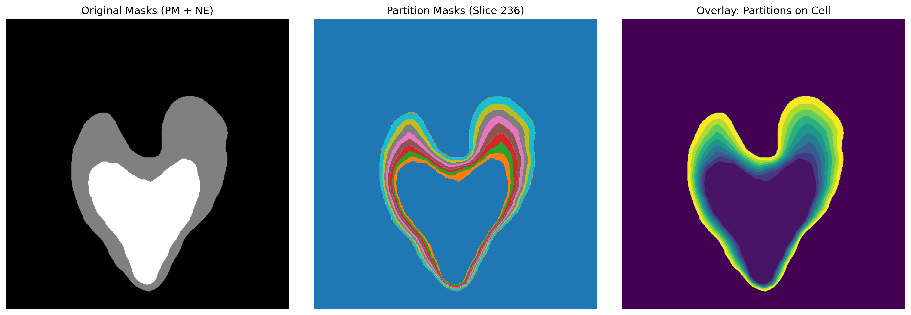

Partitioning Module
Cellular space partitioning module for radial spatial analysis and visualization of intracellular membrane structures. This module focuses on spatial partitioning between nuclear envelope (NE) and plasma membrane (PM), supporting radial stratification analysis of 3D cellular volumes.
Overview
Core functionalities of this module:
Radial Space Partitioning: Create concentric layered regions between nuclear envelope and plasma membrane
Boundary Extraction: Automatic identification and extraction of cellular membrane structure boundary points
Spatial Pairing: NE-PM point mapping based on angle matching
3D Visualization: Multi-level visualization tools for partitioning results
{kind=link}

Figure 1: Cellular partitioning visualization. Left: Original PM and NE masks; Middle and Right: Show partitioning of the example cell structure, with differences in the color gradient representation.
Core Classes and Functions
Main Class
Visualization Functions
2D slice visualization of partitioning results:
Support simultaneous display of multiple layers
Customizable slice position
Automatic color mapping and legends
- Parameters:
partition_list (list): List of layer masks
slice_idx (int): Index of slice to display
save_path (str, optional): Save path
Layer feature statistical charts:
Display volume distribution of each layer
Statistical layer geometric features
Generate quantitative analysis charts
Usage Examples
Basic Partitioning Workflow
from ipa.processing.partitioning import Partitioning
from ipa.data_loader import UniversalDataLoader
import numpy as np
# 1. Initialize analyzer
partitioner = Partitioning(
root_dir="partition_analysis/",
n_slices=8,
num_cores=4
)
# 2. Load cellular membrane mask data
ne_mask = UniversalDataLoader.load_data("nuclear_envelope.mrc")
pm_mask = UniversalDataLoader.load_data("plasma_membrane.mrc")
# 3. Extract boundary coordinates
center, ne_edge, pm_edge = partitioner.extract_ne_pm_edges(pm_mask, ne_mask)
print(f"Detected cell center: {center}")
print(f"NE boundary points: {len(ne_edge)}, PM boundary points: {len(pm_edge)}")
# 4. Create radial partitions
partition_masks = partitioner.create_radial_partitions(
ne_edge, pm_edge, ne_mask.shape
)
print(f"Generated {len(np.unique(partition_masks))-1} radial partitions")
Visualization examples
from ipa.processing.partitioning import visualize_partitions, plot_partition_features
# 2D slice visualization
visualize_partitions(
partition_list=[partition_masks == i for i in range(1, 9)],
slice_idx=20,
save_path="partitions_slice20.png"
)
# Layer feature analysis
plot_partition_features(
partition_masks,
save_path="partition_statistics.png"
)
# Extract and save coordinate data
partition_coords = partitioner.extract_partition_coordinates(
partition_masks,
sampling_density=0.05
)
partitioner.save_partition_coords_to_xvg(
partition_coords,
"sample_cell",
"output_dir/"
)
Output Data Formats
XVG Coordinate Files
3D coordinate points for each layer
Layer index markers
Sampling density control